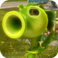
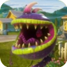
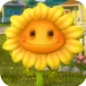
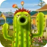
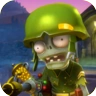
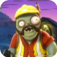
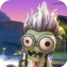
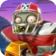

Plantas
Disparervilha

Planta Que tem como papel principal ser a Linha de Frente contra os zumbis, Ataca utilizando ervilhas que causam dano bruto de 35. Suas habilidades são Ervilhadora que é uma metralhadora que causa dano por segundo, bomba de feijão que explode em uma área causando 125 de danos, e por fim hiper que faz com que a Disparervilha tenha um aumento de velocidade e pulo por um tempo determinado de 30 segundos.
Carnívora

Planta de Linha de frente que tem como objetivo eliminar imediatamente zumbis ao devorar-los ou pode morde-los até a morte. Tem como habilidades uma gosma capaz de deixar o zumbi lento e impedir que ele use habilidades por um tempo limitado de 15 segs, Uma enterrada capaz de faze-la mergulhar no chão para não tomar dano e pegar um zumbi de surpresa e por ultimo sua erva-espinho, uma armadilha que ao ser acionada prenda o zumbi deixando vulnéravel e possível de devorar.
Girassol

Planta capaz de curar seus aliados servindo como uma suporte porém Que ainda seja capaz de atacar seus inimigos com um dps de 10 de dano. Suas habilidas são: Raio de cura, capaz de curar seus aliados em um determinado raio de distancia, Raio Solar que faz com que a Girassol se plante no chão para lançar um laser poderoso nos zumbis e por fim a flor de cura, um vaso capaz de curar quem estiver perto dele.
Cacto

Um sniper habilidoso capaz de eliminar zumbis de longa distancia com seus disparos perfurantes. Tem como habilidades: Batata-mina uma batata que ao ser pisada por um zumbi o explode o jogando para cima no prosecesso. Noz-muralha, uma muralha de noz que impede os zumbis de passarem por aquele caminho. E por fim seu dronalho, um alho voador que atira nos zumbis e que também pode lançar um morteiro de milho que bombardeia a região selecionada.
Zumbis
Soldado

O principal zumbi de linha de frente, que usa uma arma semelhante a um rifle de assalto para derrubar as plantas. Suas habilidades são: Sua bomba de fumaça que pode tampar a visão das plantas deixando elas cegas e tomando 2 de danos por segundo, Pulo foguete uma habilidade que faz com que o Soldado pule alto para alcançar prédios ou casas e por fim o ZPG um missil capaz de matar qualquer planta ao acerta-la.
Engenheiro

O Grande mestre da construção de portais um zumbi que ajuda seu time a capturar a base construindo portais. tem como habilidades: seu autofalante que atordoa plantas ao acerta-las e pode tirar a Carnívora da terra, um drone robô que assim como o do Cacto pode lançar um bombardeio em uma região. E por fim sua britadeira que o ajuda a se locomover mais rapido para o local do teleporte ou para o objetivo.
Cientista

O médico do time que tem uma arma de curto alcance para dilacerar quem chegue perto dele. Suas Loucura traz habilidades fortes como a bombola, uma bomba que gruda em qualquer lugar e até mesmo numa planta fazendo explodir ao entrar em contato com o inimigo, um teleporte para alcançar aliados ou pegar de surpresa inimigos, e por fim uma estação de cura um equipamento que ao ser colocado no chão é capaz de curar seus aliados em alguns segundos.
All-Star

O casca grossa da equipe do Zumbis, um tank capaz que aguentar bastante porrada, com sua metralhadora giratória de bolas de futebol americano. Sua brutalidade tem como habilidades: Um encontrão que empurra as plantas as lançando para muito longe e causando 65 de dano, seu boneco de treino que pode bloquer golpes de inimigos e por fim um zumbinho bomba que ao ser lançado explode e deruba plantas ao redor da explosão.